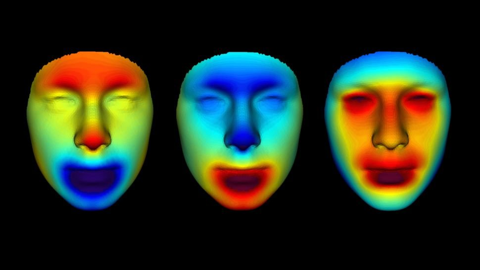

ဒီ မံမီရုပ်ကြွင်းတွေကို အီဂျစ်ရှေးဟောင်း မြို့ကြီးဖြစ်တဲ့ အဘူဆီအာ အယ်လ် မီလက်ခ် (Abusir el-Meleq) မြို့ကနေ တူးဖော်ရရှိထားတာ ဖြစ်ပါတယ်။ ဒီမြို့ဟာ ကိုင်ရိုမြို့ တောင်ဖက်က ရေလွှမ်းလွင်ပြင်တွေ ရှိတဲ့ အရပ်မှာ တည်ရှိခဲ့တာပါ။ ဒီ မံမီရုပ်ကြွင်းတွေကို ဘီစီ ၁,၃၈၀ နဲ့ အေဒီ ၄၂၅ ခုနှစ်တွေအကြား မြှုပ်နံခဲ့တာ ဖြစ်ပါတယ်။
ဒီ မံမီရုပ်တွေရဲ့ မျိုးရိုးဗီဇ DNA ကို ထုတ်ယူပြီး ဖတ်ရှုခဲ့ကြတဲ့ ပညာရှင်တွေကတော့ ဂျာမနီနိုင်ငံ တူဘင်ဂျန် မြို့မှာ တည်ရှိတဲ့ မက်စ်ပလန့် သုတေသန ဌာန (Max Planck Institute for the Science of Human History in Tübingen) လူသားသမိုင်း သိပ္ပံဌာနက ပညာရှင်တစ်စုပဲ ဖြစ်ပါတယ်။ ဒီ DNA ကို ၂၀၁၇ ခုနှစ်ကတဲက ထုတ်ယူခဲ့ပြီး ဖတ်ရှုခဲ့ကြတာ ဖြစ်ပါတယ်။ အဲ့သည့်အချိန်က ဒါဟာ မံမီတွေရဲ့ မျိုးရိုးဗီဇ အပြည့်အစုံကို ပထမဆုံး ဖတ်ရှုနိုင်ခဲ့ ကြတာလဲ ဖြစ်ပါတယ်။
ဒီ မျိုးရိုးဗီဇ အချက်အလက်တွေကို အခြေခံပြီး အမေရိကန် ပြည်ထောင်စု၊ ဗာဂျီးနီးယား ပြည်နယ်က ပါရာဘွန် နာနို သုတေသန ဓါတ်ခွဲခန်း (Parabon NanoLabs) ကနေ သူတို့ရဲ့ မျက်နှာ 3D ပုံစံတူတွေကို ကွန်ပျူတာနဲ့ ဖန်တီးခဲ့ကြတာ ဖြစ်ပါတယ်။ ဒီနည်းပညာကို မှုခင်း မျိုးရိုးဗီဇ ရုပ်သွင်စစ်ဆေးမှု (forensic DNA phenotyping) လို့ အမည်ပေးထားပါတယ်။ ဒီနည်းစနစ်မှာ မျိုးရိုးဗီဇ DNA ကို စစ်ဆေးပြီး ဖြစ်နိုင်ခြေရှိတဲ့ မျက်နှာသွင်ပြင်နဲ့ အခြား ပြင်ပလက္ခဏာတွေကို ကွန်ပြူတာနဲ့ ပုံဖေါ်ယူတာ ဖြစ်ပါတယ်။
“ဒီလောက် သက်တမ်းကြာနေပြီဖြစ်တဲ့ လူသား မျိုးရိုးဗီဇကို အသေးစိတ် ခွဲခြမ်းစိတ်ဖြာ စစ်ဆေးတာ ဒါဟာ ပထမဆုံး အကြိမ် ဖြစ်ပါတယ်” လို့ ပါရာဘွန် ဓါတ်ခွဲခန်းရဲ့ ထုတ်ပြန်ချက်မှာ ရေးသားထားပါတယ်။ ဒီ ဓါတ်ပုံတွေကို စက်တင်ဘာ ၁၅ ရက်က အမေရိကန် ပြည်ထောင်စု အော်လန်ဒိုမြို့မှာ ကျင်းပခဲ့တဲ့ ၃၂ ကြိမ်မြောက် International Symposium on Human Identification နည်းပညာ စာတမ်းဖတ်ပွဲမှာ ထုတ်ဖေါ်ပြသခဲ့တာ ဖြစ်ပါတယ်။
သိပ္ပံပညာရှင်တွေဟာ ဒီနည်းစနစ်ကို အသုံးပြုပြီး အခု မံမီတွေရဲ့ အသားအရောင်နဲ့ အခြား မျက်နှာသွင်ပြင်တွေကို ပြန်လည်ဖန်တီးကြပါတယ်။ DNA စစ်ဆေးချက်အရ ဒီမံမီတွေဟာ အသက်ရှင်ခဲ့ချိန်က အသားညိုပြီး ဆံပင်နဲ့ မျက်လုံး အမည်းရောက် ရှိကြတယ်ဆိုတာ တွေ့ရှိခဲ့ပါတယ်။ သူတို့ရဲ့ မျိုးရိုးဗီဇကလဲ လက်ရှိ မြေထဲပင်လယ် ဒေသနဲ့ အရှေ့အလယ်ပိုင်းမှာ နေထိုင်နေကြတဲ့ ခေတ်သစ်လူသားတွေနဲ့ အနီးစပ်ဆုံး တူညီနေပြီး ခေတ်သစ် အီဂျစ်တွေနဲ့ကျတော့ သိပ်မတူတာ သွားတွေ့ရပါတယ်။
ဒီအချက်တွေ သိရပြီးတဲ့နောက် ပညာရှင်တွေဟာ ဒီလူတွေရဲ့ မျက်နှာပုံစံ အကြမ်းကို ကွန်ပြူတာ 3D ပုံကြမ်းအဖြစ် ရေးဆွဲကြပါတယ်။ ဒီကနေမှ သူတို့မျက်နှာတွေမှာ အပူပျံနှံ့တဲ့ ပုံစံကို ဖော်ပြတဲ့ အပူမြေပုံ (Heat Map) ကို တွက်ချက်ရေးဆွဲ ပါတယ်။ ဒီရရှိတဲ့ အချက်တွေ အားလုံးကို ပေါင်းစပ်ပြီး မူလ မျက်နှာပုံကို ပြန်လည်ဖော်တာပဲ ဖြစ်ပါတယ်။

“ဒီနှစ်ချက် ပေါင်းလိုက်တော့ တကယ်တမ်း စမ်းသပ်စစ်ဆေးဖို့ ရလာတဲ့ ဒီအန်အေက နည်းနည်းလေးပဲ ကျန်ပါတယ်။” လို့ သူက ဆက်ပြောပါတယ်။
ဒါပေမယ့် သိပ္ပံပညာရှင်တွေအတွက် ကံကောင်းတာကတော့ လူသား မျိုးရိုးဗီဇ အများစုက လူအားလုံးမှာ အတူတူပဲ ဖြစ်နေတာ ဖြစ်ပါတယ်။ အဲ့သည်တော့ တကယ် ဓါတ်ခွဲစမ်းသပ်တဲ့အခါ DNA အားလုံးကို ဓါတ်ခွဲစမ်းသပ်စရာ မလိုတော့ပါဘူး။ ဒီ DNA အားလုံးထဲကမှ လူတစ်ဦးနဲ့ တစ်ဦး မတူတဲ့ နေရာလေးတွေကိုပဲ ရွေးပြီး ဓါတ်ခွဲကြည့်ဖို့ လိုပါတော့တယ်။ ဒီလို ကွာခြားတာကလဲ မော်လီကျူး အလုံး ထောင်ချီမှာမှ တစ်လုံးလောက်ပဲ ကွာကြတာပါ။ ဒါကို single nucleotide polymorphisms လို့ ခေါ်ပါတယ်။ လူတစ်ဦးနဲ့ တစ်ဦး မျိုးရိုးဗီဇ ကွာတာသည် အဲ့သည် အဓိက နေရာတွေမှာ ရှိနေတဲ့ nucleotide မော်လီကျူး အနည်းငယ်လောက်ပဲ ကွာကြတာ ဖြစ်ပါတယ်။
ဒါပေမယ့် တခါတလေ ဖြစ်တတ်တာက ဓါတ်ခွဲစစ်ဆေးမှု ပြုလုပ်တဲ့အခါ ရှေးဟောင်း DNA တွေရဲ့ အချို့အပိုင်းလေးတွေ ပျက်စီးနေတာမျိုး ရှိတတ်ပါတယ်။ ဒီပျက်စီးနေတဲ့ အပိုင်းမှာ ရှိနေတဲ့ မျိုးရိုးဗီဇ ကွဲပြားမှုတွေကို ပြန်ရှာလို့ မရတာမျိုး ဖြစ်တတ်ပါတယ်။ ဒီအခါမျိုးမှာတော့ အနီးအနားက အခြား မျိုးရိုးဗီဇ မော်လီကျူးတွေရဲ့ ကွဲပြားမှုတွေကိုကြည့်ပြီး ပြန်လည် တွက်ချက် မှန်းဆရတာမျိုး ရှိတတ်ပါတယ်။ ဒီလို တွက်ချက်တာကို အရင် စမ်းသပ်ခဲ့ ဖူးတဲ့ မျိုးရိုးဗီဇတွေမှာ တွေ့ခဲ့ရဖူးတဲ့ တစ်ဦးနဲ့ တစ်ဦး ကွဲပြားခြားနား တဲ့ ပုံစံကို အခြေခံပြီး သင်္ချာနည်းနဲ့ တွက်ချက်ကြတာ ဖြစ်ပါတယ်။ ဒီနည်းနဲ့ ပျောက်ဆုံးသွားတဲ့ ဒီအန်အေ အပိုင်းလေးတွေက ဘာဖြစ်နိုင်တယ်ဆိုပြီး မှန်းဆရပါတယ်။
အခုနည်းစနစ်က ရှေးဟောင်း မံမီတွေမှာတင် အသုံးဝင်တာ မဟုတ်ပါဘူး။ ယခုခေတ် အမည်ဖော်မရတဲ့ သေဆုံးရုပ်ကြွင်းတွေကို ပိုင်ရှင် ရှာဖွေရာမှာလဲ အသုံးဝင်ပါတယ်။ ဒီနည်းနဲ့ ပိုင်ရှင်ဖော်မရပဲ တွေ့ရှိရတဲ့ ရုပ်ကြွင်းတွေကို မျက်နှာပြန် ဖော်ယူရာမှာလဲ အသုံးပြုကြပါတယ်။ အခုထိ ပါရာဘွန် ဓါတ်ခွဲခန်းက ပိုင်ရှင်ဖော်ထုတ်ပေးခဲ့တဲ့ ပိုင်ရှင်မဲ့ ရုပ်အလောင်း ၁၇၅ လောင်း ရှိပြီဖြစ်တဲ့အနက်က ၉ လောင်းကို အခု မံမီတွေကို မျက်နှာ ပုံဖော်တဲ့ နည်းစနစ်နဲ့ ပိုင်ရှင်ရှာဖွေ ပေးခဲ့တာလို့ သိရပါတယ်။
Reference: 3 Egyptian mummy faces revealed in stunning reconstruction | Live Science